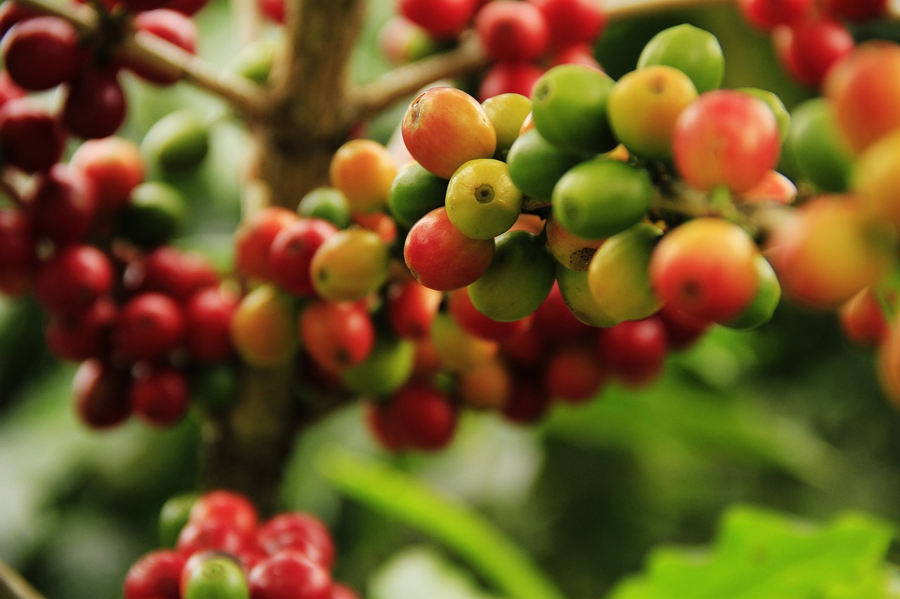

Sobre Nosotros
¿sabes como se cultiva actualmente y qué factores influyen en su sabor?. Una de las respuestas está en la altitud del café. Te vamos a llevar por un viaje que explora la relación entre la altitud del café que tanto disfrutas y su sabor.
El cultivo del café y sus secretos
La altura, sin duda, juega un papel crucial en el sabor y calidad del grano. Cuanto más alto es el lugar donde se cultiva el café, los granos maduran más lentamente debido a las bajas temperaturas, por lo que la altitud del café es verdaderamente importante. De hecho, el café de montaña que, como su propio nombre indica, se cultiva en altitudes más elevadas, es conocido por su acidez brillante y su sabor complejo. Por su parte, el café cultivado a menor altitud suele tener un perfil de sabor más dulce y menos ácido debido a que los granos maduran más rápidamente y esto produce sabores más suaves.
Los desafíos de cultivar café en altitudes elevadas
No todo es sencillo al cultivar en alturas. Los agricultores enfrentan desafíos específicos de la altitud del café como el acceso a las fincas o la dificultad durante el proceso de la cosecha. Asimismo, la altitud también influye durante el proceso de tostado. Por esta razón, conocer una técnica adecuada y seguirla con precisión puede resultar esencial para obtener un buen café. El caficultor debe conocer bien la tierra donde se cultiva el café para completar con éxito todas las etapas del proceso, desde la siembre hasta la cosecha.
Probablemente ahora te sientas más conectado con cada taza de café que disfrutas. Cada sorbo te cuenta una historia de altitudes, de esfuerzo y, sobre todo, de pasión.